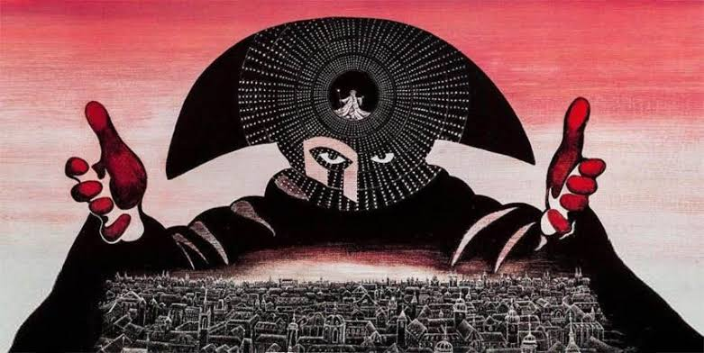

Oratorio, misa y réquiem
Dentro de la música vocal religiosa se siguen componiendo oratorios, como La creación, de Haydn, y misas, como la Misa en do menor, de Mozart. Un tipo específico de misa es el réquiem o misa de difuntos, género que queda inmortalizado en el Clasicismo con el grandioso Réquiem en re menor, de Mozart.

| En la película Amadeus (1984) podemos conocer en detalle la vida y obra de W.A. Mozart. No obstante, la película tiene muchos errores históricos, como por ejemplo la rivalidad entre Mozart y Salieri o que éste último lo engañó para componer el Réquiem que escucharás en breves. |
ESCUCHAMOS PERO NO JUZGAMOS: ORATORIOS Y MISAS
🎧 Audición 2
Escucha atentamente el siguiente fragmento musical Haydn - La Creación y responde a las siguientes cuestiones
Haydn - La Creación - "Ya se desvanecen ante los rayos sagrados..."
- ¿En qué consistía un Oratorio? Intenta acordarte de los del Barroco.
- Al ser representada la obra, ¿Existirían los decorados, vestuario o actuaciones?
🎧 Audición 3
Vas a escuchar ahora el Dies Irae de la misa de réquiem de Mozart. Responde a las siguientes preguntas.
Mozart - Misa de Réquiem en re menor - Dies Irae
a) ¿Qué emoción te transmite la obra?
b) ¿Qué quiere decir Dies Irae? ¿En qué otros momentos de la historia hemos visto este término?